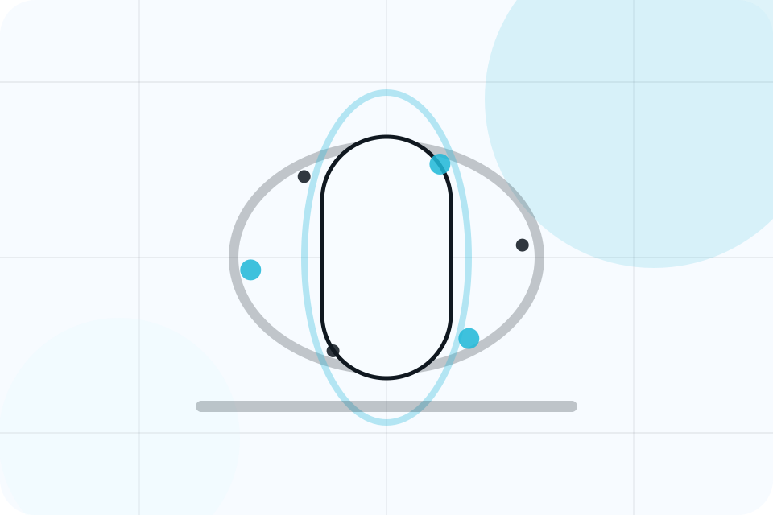

ASH-TRA static portfolio support
Accessibility Statement
ASH-TRA designs static sites with semantic HTML, readable typography, keyboard navigation, visible focus states, responsive layouts, and reduced-motion support.
The build includes skip links, labelled forms, alternative text, structured headings, and a mobile menu designed for large tap targets.
If a visitor finds an accessibility barrier, the contact page provides a route to request assistance and remediation. Final accessibility conformance still requires manual review with browser, keyboard, zoom, contrast, and assistive technology checks.